library(ggplot2)
library(tidyverse)Lab1 - Grammar of Graphics
Loading packages.
The data and questions of interest
Data shows rows of incidents handled by the Police.
We wish to answer questions about youth offending (up to age 19) trends in time, but especially around the switch from year 2021 and 2022.
We would also like to investigate differences in youth and adult offending as well as compare offending between male and female offenders.
crime <- read.csv("nzpolice-proceedings.csv")
head(crime) Age.Lower Police.District
1 15 Tasman
2 20 Auckland City
3 40 Auckland City
4 10 Auckland City
5 15 Auckland City
6 15 Auckland City
ANZSOC.Division SEX
1 Acts Intended to Cause Injury Female
2 Abduction, Harassment and Other Related Offences Against a Person Female
3 Abduction, Harassment and Other Related Offences Against a Person Female
4 Acts Intended to Cause Injury Female
5 Acts Intended to Cause Injury Female
6 Acts Intended to Cause Injury Female
Date
1 2015-12-01
2 2015-12-01
3 2015-12-01
4 2015-12-01
5 2015-12-01
6 2015-12-01Data visualisations and questions
Question 1
We create the bar plot below by using the geom_bar geom function to create a summary statistic of counts of the variable Age.Lower (geom_bar uses the stat stat_count behind the scenes to create the summary), which we use as out x in our aesthetic mapping for the plot. Note that we set the just argument to 0 to ensure a left-alignment of the bars (default is 0.5, which centers the bars).
crime %>%
ggplot(aes(x = Age.Lower)) +
geom_bar(just = 0)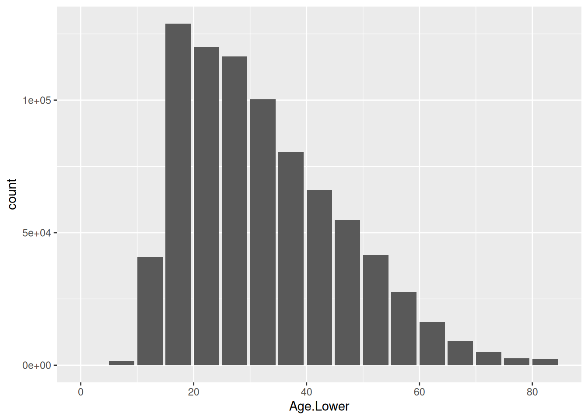
This plot has substantive issues in answering our questions of trend over time as well as differences between males and females as information about time and gender is not in the plot. However, the bar plot does show that the highest number of incidents across all values of a lower bound of a 5-year age band of the offender, is among incidents with a lower age band of 15 years. There are also quite a few incidents with a lower bound of 10 years, which seems to match the frequency of incidents corresponding to a lower limit of 50 years. Thus, youth offending is occurring frequently, but by accumulating the adult incidents, we see that adult offending is in general more frequent than youth offending.
Question 2
Doing the summary statistic of count across the different lower limits ourselves in data and then plotting, we use geom geom_col, which utilises the stat stat_identity with aesthetic mapping of x being Var1 (our lower bound of ages) and y being Freq (our frequency of incidents for the corresponding lower bound of age).
crimeTab <- as.data.frame(table(crime$Age.Lower))
crimeTab %>%
ggplot(aes(x = Var1, y = Freq)) +
geom_col(just = 0)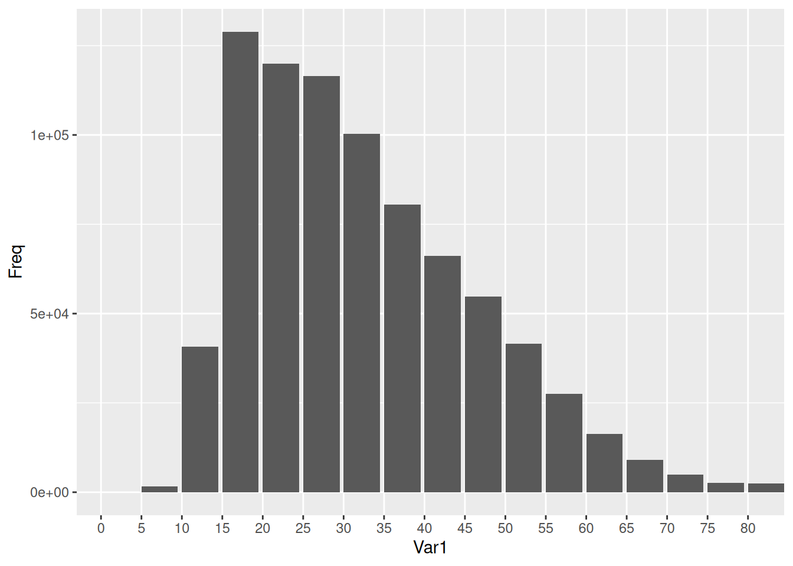
Question 3
We create the plot as we did in question 1 with geom_bar geom function (which uses stat_count as stat) with aesthetic mapping of Age.Lower as our x. However, in this case, we add aesthetic mappings of fill = SEX, which fills the bars with colors based on the observations’ value of SEX in the data set. The default value of position in geom_bar is "stack", so by the default behavior of the geom, we produce this stacked plot.
crime %>%
ggplot(aes(x = Age.Lower, fill = SEX)) +
geom_bar(just = 0)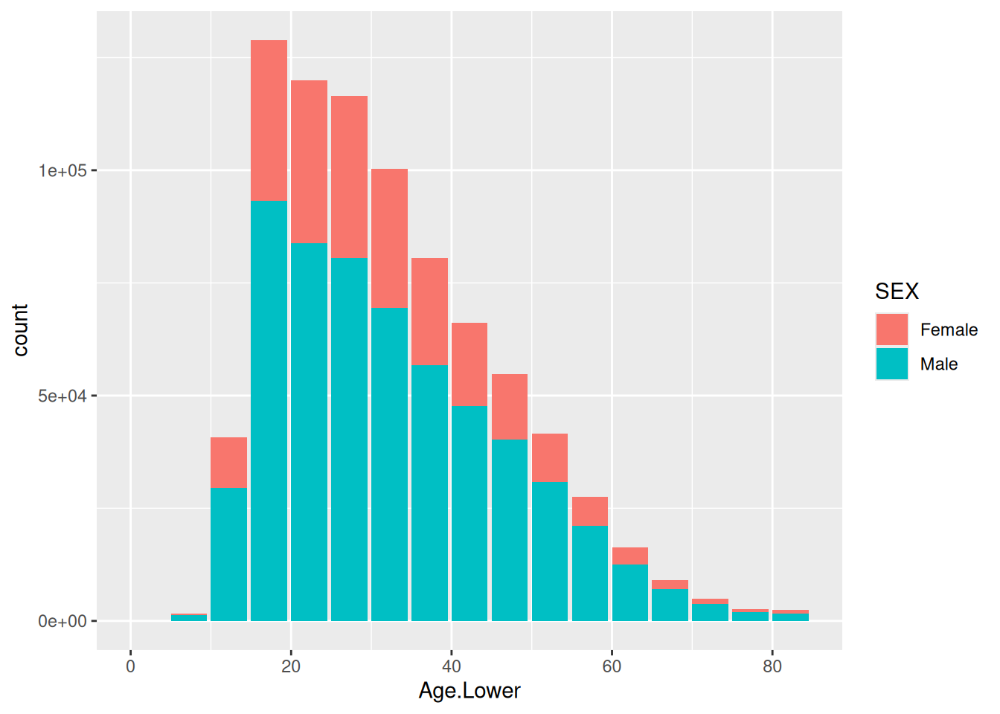
This new plot does not provide new information in regards to our question of youth vs. adult offending, compared to the plot in question 1, so we could say all the same to that question. The time trend question is still not answerable by this plot due to the substantive issue of missing information about time.
However, this plot does help us get an idea of differences between female and male offenders. The plot shows immediately that there are more male offenders than female offenders. It looks like the ratio is quite similar across different lower bounds of age, though it’s hard to judge whether this is exactly or just approximately correct from this plot.
Question 4
crime %>%
ggplot(aes(x = Age.Lower, fill = SEX)) +
geom_bar(just = 0, position = "dodge")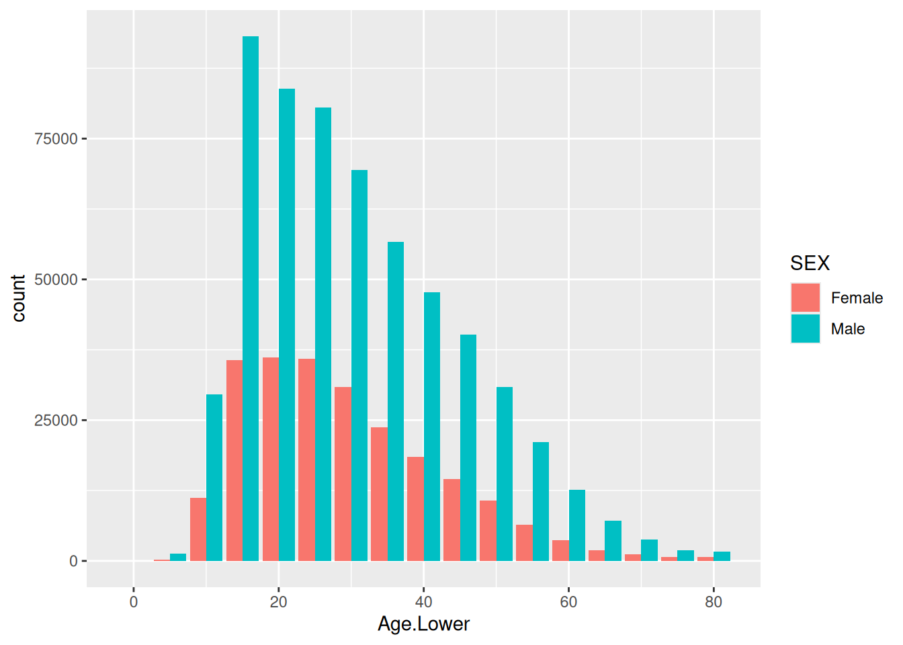
crime %>%
ggplot(aes(x = Age.Lower, fill = SEX)) +
geom_bar(just = 0, position = "identity")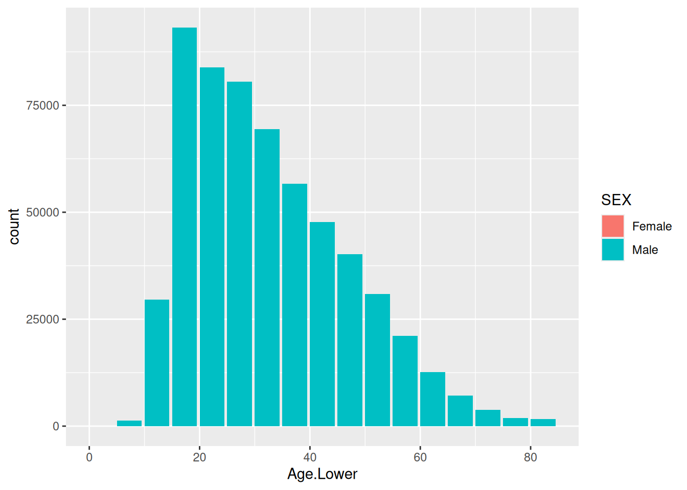
crime %>%
ggplot(aes(x = Age.Lower, fill = SEX)) +
geom_bar(just = 0, position = "fill")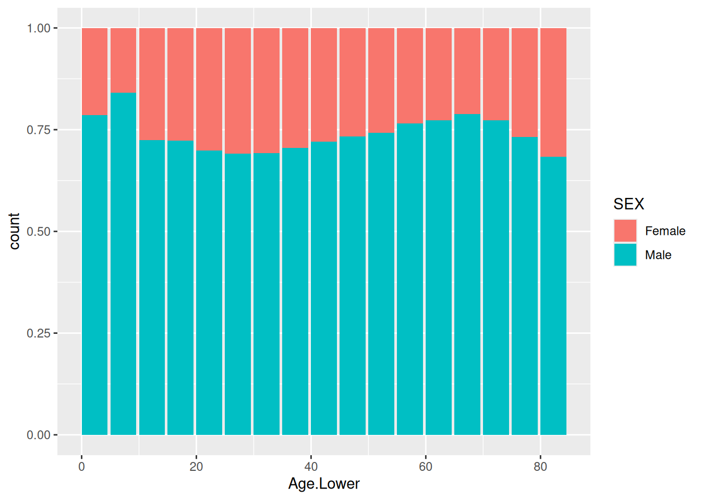
The plot with position = "fill" cannot help us answer the question about youth vs. adult offending (or the time trend). However, it does a great job at trying to answer the question about differences between male and female offending, as it is essentially plotting the ratio of male and female offenders as its response on the y-axis. For the plot in question 3, I said it looked like the ratio was approximately the same across different lower bounds of age. This plot shows more clearly that the ratios are quite similar, but there are subtle differences. The biggest difference is seen from the very lowest ages, where a higher proportion of males is present, which takes a big drop at lower bound of age 10.
The plot with position = "dodge" shows incidence rates individually for each combination of gender and lower bound of age, compared to the position = "stack", which showed cumulative incidence rates within age groups. In my opinion, position = "stack" does a better job of answering the question of youth vs. adult offending by providing cumulative rates while still giving an idea of gender differences, and the position = "fill" plot does a better job of answering the question about gender differences.
The plot with position = "identity" does not provide any position adjustment, thus positioning the bar for females behind the bar for males, thus making the plot not provide any information about gender differences, though that was the whole point of coloring the bars by gender. Biggest possible substantive issue in answering the question of gender differences; no information is available.
Question 5
To create a line plot, we can use the geom_line geom. We use the stat_identity stat to display the data as is, as we have already ourselves created the summary statistic of frequency across time that we are interested in. Thus, we just use aesthetic mappings of x = Date and y = Freq to plot the values in data.
crimeTrend <- as.data.frame(table(crime$Date))
crimeTrend$Date <- as.Date(crimeTrend$Var1)
crimeTrend %>%
ggplot(aes(x = Date, y = Freq)) +
geom_line()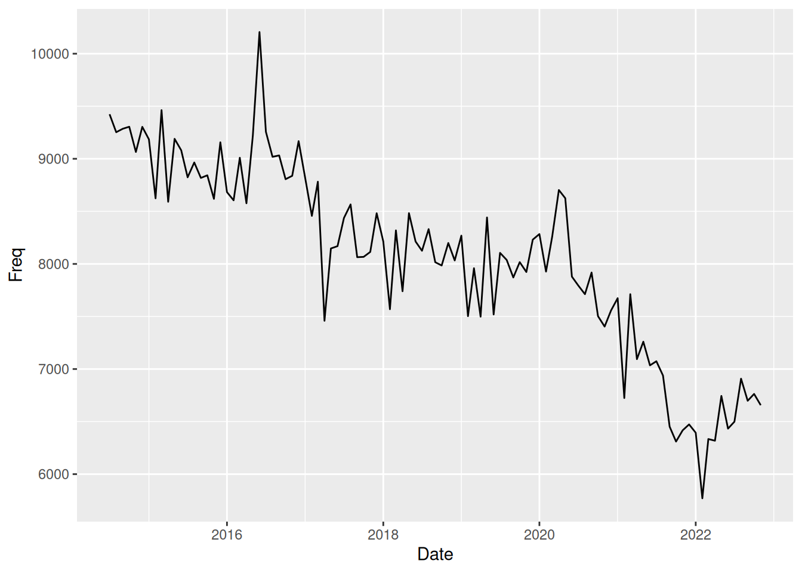
This plot has substantive issues in answering the questions we previously discussed, as it does not contain information on age or gender. However, it can be used to answer the question about time trend. The plot shows that there has been an overall downwards trend in incidence rates of crime from 2014 to 2022 with natural variability in data. However, we do notice some peaks that seem to have larger variance than other places in data during year 2016 and at the start of 2020. Furthermore, the downwards trend seems to reverse at the start of 2022, with incidence rates that seem to start increasing.
Question 6
We use the geom_line geom with stat_identity stat and with aesthetic mappings of x = Date, y = Freq, color = Var2 and linewidth = 1.4. Note however that we use the aesthetic linewidth outside aes() because it is not associated with any variable but rather we just want to change it statically for all lines in the plot. If we wished to change the linewidth for different values of SEX, we could put it inside aes(). Note also that we change the default colors assigned to the different gender by using scale_color_manual to tell exactly what colors we would like for the different values.
crimeTrendSex <- as.data.frame(table(crime$Date, crime$SEX))
crimeTrendSex$Date <- as.Date(crimeTrendSex$Var1)
crimeTrendSex %>%
ggplot(aes(x = Date, y = Freq, color = Var2)) +
geom_line(linewidth = 1.4) +
scale_color_manual(values = c(Female = "pink", Male = 4))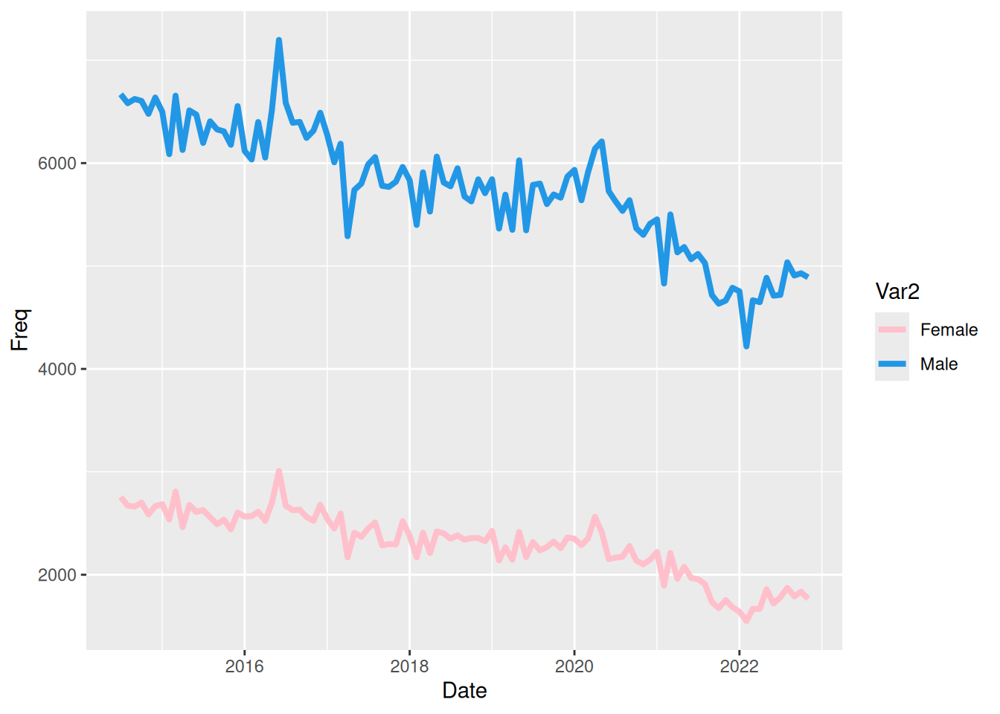
The plot shows the exact same as we commented in the previous question about the time trend. Overall a downward trend is seen with some larger peaks in a couple location, and a sudden rise in incidence is seen from the start of 2022.
This plot, however, can also help answer the question about gender differences, as we can see from the plot that there are quite a few more male offenders than female offenders. It does a good job if trying to answer a questions specific to absolute incidence rates for males and females across years. If seeking to answer a question about the ratio of female and male offenders, a new response variable consisting of this ratio and plotting against time would be benefitial.
Question 7
We use the geom_line geom with stat_identity stat and with aesthetic mappings of x = Date, y = Freq, group = Age, color = Age and linewidth = 1. The use of group = Age is to ensure that only points inside each group are connected to form a line. Without this aesthetic mapping, the plot would be a complete mess (more than it is…)
crimeTrendAge <- as.data.frame(table(crime$Date, crime$Age.Lower))
crimeTrendAge$Date <- as.Date(crimeTrendAge$Var1)
crimeTrendAge$Age <- as.numeric(as.character(crimeTrendAge$Var2))
crimeTrendAge %>%
ggplot(aes(x = Date, y = Freq, group = Age, color = Age)) +
geom_line(linewidth = 1)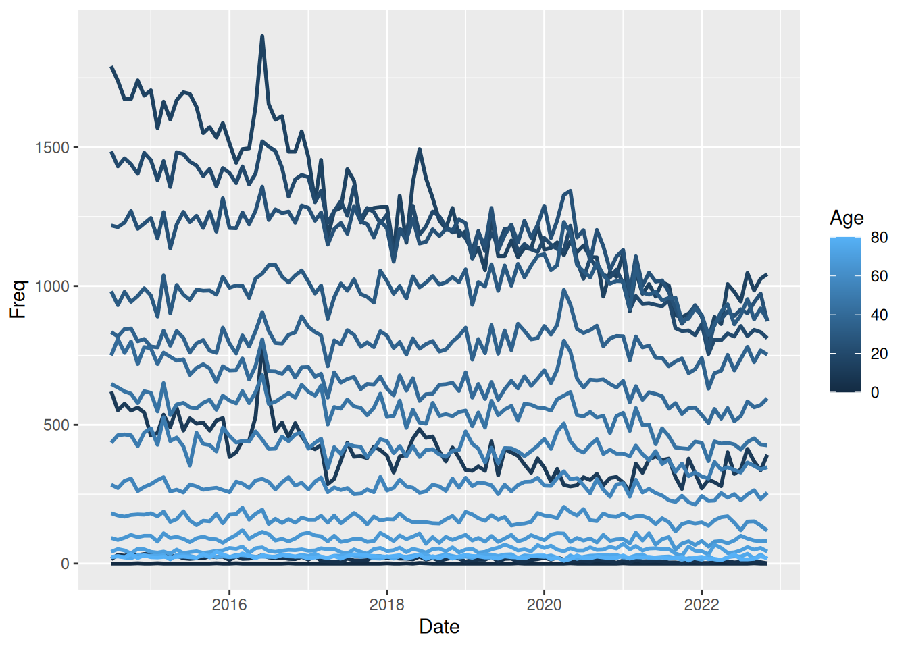
In my opinion, this plot does a bad job of trying to answer any of the questions. It tries to help answer the question about trend over time while trying to show differences between youth and adult offending. However, the plot is trying too much, leading the reader unable to derive any meaning from it.
It’s possible to sense a form of downward trend over time, but it’s hard to see and is much better answered using one of the previous plots. In regards to youth vs. adult offending, the reader is unable to identify the age corresponding to a color due to the small difference in colors between many groups, possibly creating perceptual issues as a color might seem darker or lighter than it actually is if surrounded by a color on the “opposite side”.
Question 8
The geom is again geom_line with stat stat_identityand x = Date, y = Freq and linewidth = 1 as aesthetic mappings and facet by values of Age.
crimeTrendAge %>%
ggplot(aes(x = Date, y = Freq)) +
geom_line(linewidth = 1) +
facet_wrap(~ Age)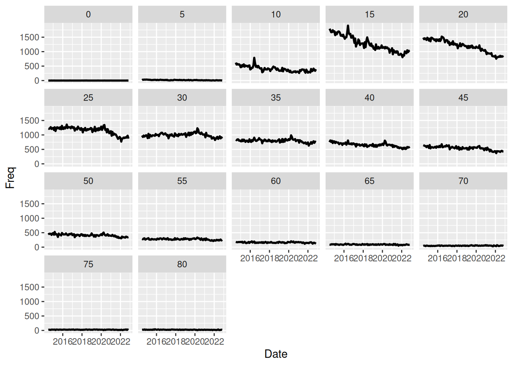
This plot helps us answer a question of trends over time of youth vs. adult offending. So the plot does not help answering the “overall/general/individual” questions posed at the start but rather helps answer this “combined question”. On previous plots we saw a downward trend across time, and we saw the highest frequency of incidents for the age group with lower bound of 15 years.
This plot shows that the downward trend is actually more dramatic for this specific age group that showed the highest incidence. Other age groups also show a downward trend, but much more slightly, and it thus looks like the downward trend overall is dominated by the downward trend of younger groups.
Question 9
This plot is created as in question 1 but with facets on the new Year variable. That is, we use geom_bar as the geom (with stat_count as the stat) and aesthetic mapping of x = Age.Lower.
crime$Year <- as.POSIXlt(crime$Date)$year + 1900
crime %>%
ggplot(aes(x = Age.Lower)) +
geom_bar(just = 0) +
facet_wrap(~ Year)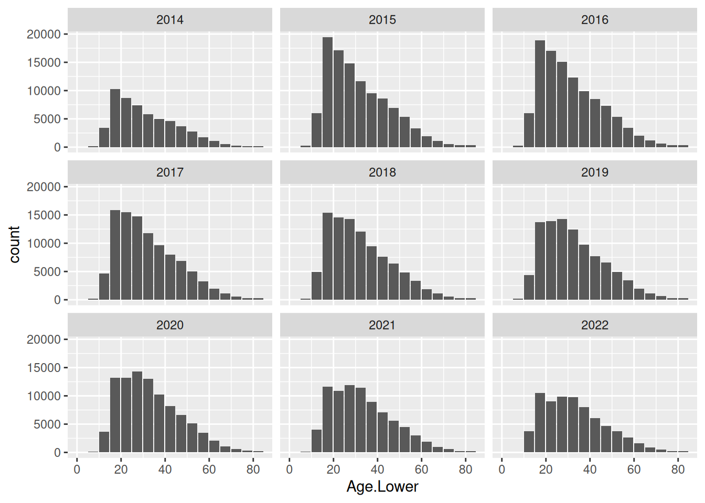
The plot helps answer the same question as the previous question, i.e. trend over time of offending across age groups. The plot supports our explanation from above, seeing that youth offending is on a more dramatic downward trend compared to the older age groups. This is the main strength of the plot. We can also see that the overall frequency is decreasing, but other plots have been better at showing that.
Question 10
I notice this plot does a reordering of the levels of the factor with divisions, ensures line break in the legend, removes text, ticks and titles from the x- and y-axis to increase the data-to-ink ratio and manual choosing of colors to make neighboring groups more distinct than the default color choice.
crimeTrendDivision <- as.data.frame(table(crime$Age.Lower, crime$ANZSOC.Division))
crimeTrendDivision$Age <- crimeTrendDivision$Var1
crimeTrendDivision$Division <- stringr::str_wrap(crimeTrendDivision$Var2, 30)
ord_div <- crimeTrendDivision %>%
dplyr::filter(Age == 15) %>%
dplyr::arrange(desc(Freq)) %>%
dplyr::pull(Division) %>%
as.character()
crimeTrendDivision$ANZSOC.Division <- factor(crimeTrendDivision$Division,
levels = ord_div)
colors <- rep(as.character(paletteer::paletteer_d("ggthemes::colorblind")), 2) %>%
setNames(levels(crimeTrendDivision$ANZSOC.Division))
crimeTrendDivision %>%
ggplot(aes(x = ANZSOC.Division, y = Freq,
group = ANZSOC.Division, fill = ANZSOC.Division)) +
geom_col(just = 0, position = "dodge") +
facet_wrap(~ Age) +
scale_fill_manual(values = colors) +
theme(axis.text = element_blank(),
axis.ticks = element_blank(),
axis.title = element_blank(),
legend.key.width = unit(0.3, "cm"),
legend.key.height = unit(0.9, "cm"),
legend.key.spacing.y = unit(0.1, "cm"),
legend.text = element_text(size = 8))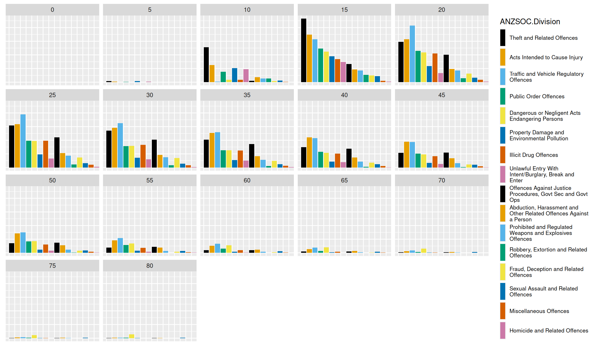
Overall summary
In order to answer questions about trend over time, youth vs. adult offending and gender differences, we need several plots that each have strengths in answering certain aspects of the questions. The simple bar chart in questions 1 and 2 gives an overview of difference between age group across all years available in data.
However, when we investigate other plots, we see that there has been a big change across time (plot in question 5 gives an easy overview of this), and thus we might want to view this sort of bar chart stratified by time. This is available in question 9, which is easily created by adding a facet_wrap to our plot creation code.
Discussing differences in male and female offenders, a straightforward approach is to use an aesthetic mapping of color = SEX to color the graph and add a legend. The stacked colored bar chart in question 3 helps us answer the same question as question 1 and 2 while also providing some information about gender differences. By simply changing the position in the geom geom_bar, we saw in question 4 that we can easily adjust the plot to help answer different questions. Especially position = "fill" helped answer questions about the ratio of male to female offenders across age groups.
The flexibility of ggplot2 is apparent as we can investigate time trends for different genders by using the same syntax of adding the aesthetic mapping of color = SEX to the line plot in question 5 - which is what we do in question 6.
Question 7’s plot is messy and practically unreadable due to the coloring of many group values, and it perfectly shows the power of facetting, when we create a figure with the same information but facetting by age group instead of coloring by it in question 8. This plot helps us see that the downward trend of incidence rates seem to be dominated by a decline in youth offending.